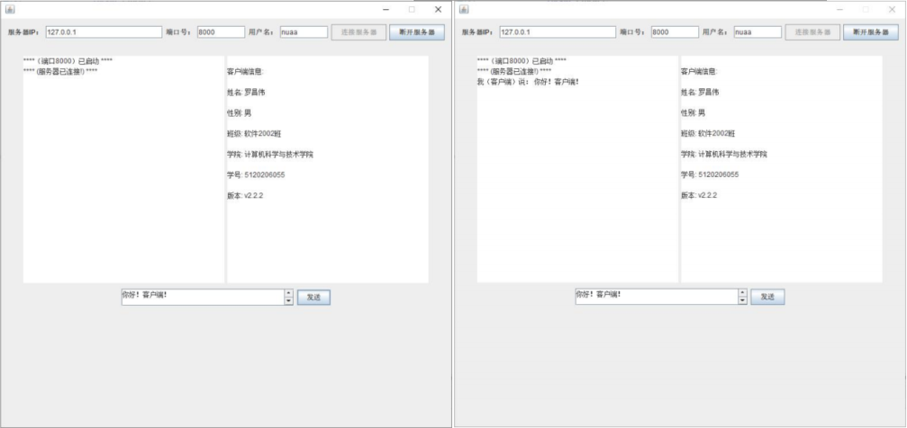
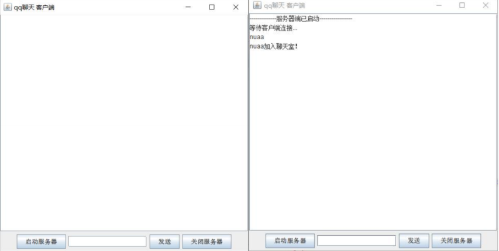
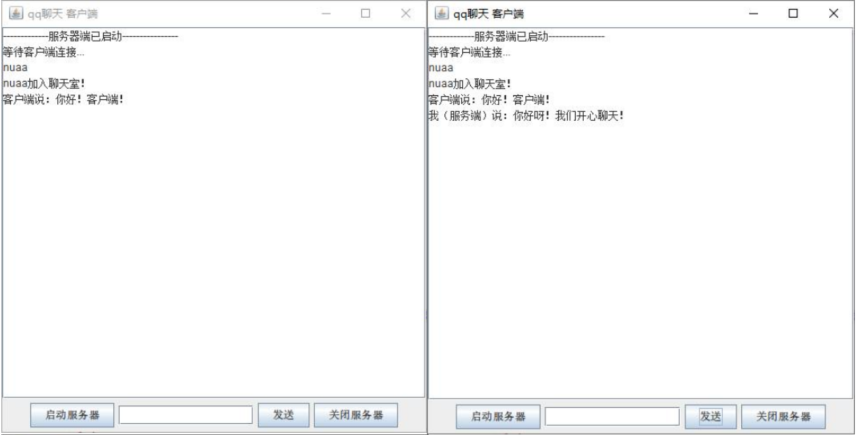
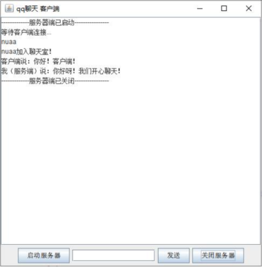

java 网络编程-聊天程序
客户端-服务器端
1.程序设计：
1.聊天程序的实现分为两部分，第一部分为客户端实现，第二部分为服务器端实现。
2.服务器端实现：功能包括启动服务器、关闭服务器、显示内容、向客户端发送信息。
（1）界面设计：界面功能区大致包含两个部分，以显示内容界面为主，在显示内容界面下方有启动服务器按钮，消息编辑框，消息发送按钮，关闭服务器按钮。
（2）服务器端创建一个类Server，构造函数包括界面初始化，启动服务器按钮添加事件，事件内容是启动默认的端口并创建第一层线程（作用是让服务器端可以同时连接多个用户端）；发送按钮中的事件中，将jtf中的内容读取出来通过DataOutputStream发送给客户端。服务器端中接收客户端发过来的信息是利用DataInputStream,数据输入流允许应用程序以与机器无关方式从底层输入流中读取基本 Java 数据类型，在接收信息时，又增加了第二层线程，第一层线程主要是为发送信息使用，而第二层是专门用来接受信息，这也是为了不干扰主线程运行特意设计。最后是关闭服务器端，关闭服务器端的任务就是通过close来断开与端口的链接，并且清空所有线程。
3.客户端实现与服务器端实现你类似，客户端功能包括连接服务器与断开服务器，显示内容，接收与发送信息等。
（1）界面设计：界面大致分为三个部分，最上面包括服务器IP，端口号，用户名以及连接服务器和断开服务器的按钮，其中可以更改服务器IP，端口号，用户名；中间为两个文本框，第一个文本框是显示发送信息内容和接收信息的内容，第二个文本框是显示客户端作者以及版本信息。最下面是有一个文本框用来编辑发送的内容和一个发送按钮组成。
（2）内容交互信息：连接服务器的绑定的事件通过读取服务器IP，端口号，用户名这 三部分中的内容连接到相应的服务器，并将用户名发送到服务器端；信息的发送与接收同服 务器端的实现形式一样。在客户端的实现过程中只用到了一个线程也就是接收线程，原因获 取系统系统输入阻塞主线程。
2.程序实现代码：
服务器端：
1
2
3
4
5
6
7
8
9
10
11
12
13
14
15
16
17
18
19
20
21
22
23
24
25
26
27
28
29
30
31
32
33
34
35
36
37
38
39
40
41
42
43
44
45
46
47
48
49
50
51
52
53
54
55
56
57
58
59
60
61
62
63
64
65
66
67
68
69
70
71
72
73
74
75
76
77
78
79
80
81
82
83
84
85
86
87
88
89
90
91
92
93
94
95
96
97
98
99
100
101
102
103
104
105
106
107
108
109
110
111
112
113
114
115
116
117
118
119
120
121
122
123
124
125
126
127
128
129
130
131
132
133
134
135
136
137
138
139
140
141
142
143
144
145
146
147
148
149
150
151
152
153
154
155
156
157
158
159
160
161
162
163
164
165
166
167
168
169
170
171
172
173
174
| package talk;
import java.awt.BorderLayout;
import java.awt.event.ActionEvent;
import java.awt.event.ActionListener;
import java.io.BufferedReader;
import java.io.DataInputStream;
import java.io.DataOutputStream;
import java.io.IOException;
import java.io.InputStream;
import java.io.InputStreamReader;
import java.io.OutputStream;
import java.io.PrintStream;
import java.io.PrintWriter;
import java.net.ServerSocket;
import java.net.Socket;
import java.net.SocketException;
import java.net.SocketTimeoutException;
import java.util.ArrayList;
import java.util.HashMap;
import javax.swing.JButton;
import javax.swing.JFrame;
import javax.swing.JPanel;
import javax.swing.JScrollPane;
import javax.swing.JTextArea;
import javax.swing.JTextField;
import java.util.Map;
public class Server extends Thread {
static ServerSocket server;
private static JTextArea jta;
private JScrollPane jsp;
private JPanel jp;
private JTextField jtf;
private JButton jb,jb1,jb2;
private JFrame frame;
private DataInputStream inFromClient;
private DataOutputStream outToClient;
private ThreadClient thread = null;
private String name=null;
private String txt = "";
Socket clientSocket = null;
Socket socket;
Server(){
frame = new JFrame();
jta = new JTextArea();
jsp = new JScrollPane(jta);
jp = new JPanel();
jtf =new JTextField(15);
jb1 = new JButton("启动服务器");
jb1.addActionListener((ActionListener) new startserver());
jb = new JButton("发送");
jb.addActionListener((ActionListener) new sendserver());
jb2 = new JButton("关闭服务器");
jb2.addActionListener((ActionListener) new stopserver());
jp.add(jb1);
jp.add(jtf);
jp.add(jb);
jp.add(jb2);
frame.add(jsp,BorderLayout.CENTER);
frame.add(jp,BorderLayout.SOUTH);
frame.setTitle("聊天服务器端");
frame.setSize(500,500);
frame.setLocation(200, 200);
frame.setDefaultCloseOperation(JFrame.EXIT_ON_CLOSE);
frame.setVisible(true);
}
private class startserver implements ActionListener{
@Override
public void actionPerformed(ActionEvent e) {
try {
server=new ServerSocket(8000);
jta.append("-------------服务器端已启动----------------\n");
jta.append("等待客户端连接...\n");
Thread acptThrd = new Thread(new AcceptRunnable());
acptThrd.start();
} catch (IOException e1) {
jta.append("创建服务器失败！\n");
e1.printStackTrace();
}
}
}
private class sendserver implements ActionListener{
@Override
public void actionPerformed(ActionEvent e) {
String s = jtf.getText();
jtf.setText("");
if (s.length() > 0) {
try {
outToClient.writeUTF(s);
outToClient.flush();
jta.append("我（服务端）说：" + s + "\n");
} catch (IOException el) {
jta.append("你的消息：“" + jtf.getText() + "”未能发出去!\n");
}
}
}
}
private class stopserver implements ActionListener{
@Override
public void actionPerformed(ActionEvent e) {
try {
server.close();
jta.append("-------------服务器端已关闭----------------\n");
} catch (IOException e1) {
e1.printStackTrace();
}
}
}
private class AcceptRunnable implements Runnable {
public void run() {
while (true) {
try {
while (true) {
clientSocket = server.accept();
outToClient = new DataOutputStream(clientSocket.getOutputStream());
thread = new ThreadClient(clientSocket);
thread.start();
}
} catch (Exception ex) {
System.out.println(ex);
}
}
}
}
private class ThreadClient extends Thread {
private DataOutputStream dataOutputStream = null;
private BufferedReader in;
private String nickname = "";
public ThreadClient(Socket socket) {
try {
this.dataOutputStream = new DataOutputStream(socket.getOutputStream());
InputStream is = socket.getInputStream();
in = new BufferedReader(new InputStreamReader(is));
name = in.readLine();
jta.append(name+"\n");
if(name.equals("exit")) {
jta.append(nickname+"退出聊天室!\n");
}
else {
nickname = name;
jta.append(name+"加入聊天室！\n");
}
} catch (IOException e) {
e.printStackTrace();
}
}
public void run() {
try{
while (true){
inFromClient = new DataInputStream(clientSocket.getInputStream());
jta.append(name+"："+inFromClient.readUTF()+"\n");
Thread.sleep(1000);
}
} catch (IOException e) {
e.printStackTrace();
} catch (InterruptedException e) {
e.printStackTrace();
}
}
}
public static void main(String[] args) throws IOException, IOException {
new Server();
}
}
|
客户端
1
2
3
4
5
6
7
8
9
10
11
12
13
14
15
16
17
18
19
20
21
22
23
24
25
26
27
28
29
30
31
32
33
34
35
36
37
38
39
40
41
42
43
44
45
46
47
48
49
50
51
52
53
54
55
56
57
58
59
60
61
62
63
64
65
66
67
68
69
70
71
72
73
74
75
76
77
78
79
80
81
82
83
84
85
86
87
88
89
90
91
92
93
94
95
96
97
98
99
100
101
102
103
104
105
106
107
108
109
110
111
112
113
114
115
116
117
118
119
120
121
122
123
124
125
126
127
128
129
130
131
132
133
134
135
136
137
138
139
140
141
142
143
144
145
146
147
148
149
150
151
152
153
154
155
156
157
158
159
160
161
162
163
164
165
166
167
168
169
170
171
172
173
174
175
176
177
178
179
180
181
182
183
184
185
186
187
188
189
190
191
192
193
194
195
196
197
198
199
200
201
202
203
204
205
206
207
| package talk;
import java.awt.*;
import java.awt.event.ActionEvent;
import java.awt.event.ActionListener;
import java.awt.event.WindowAdapter;
import java.awt.event.WindowEvent;
import java.io.BufferedReader;
import java.io.BufferedWriter;
import java.io.DataInputStream;
import java.io.DataOutputStream;
import java.io.IOException;
import java.io.InputStream;
import java.io.InputStreamReader;
import java.io.OutputStream;
import java.io.OutputStreamWriter;
import java.io.PrintStream;
import java.io.PrintWriter;
import java.net.ServerSocket;
import java.net.Socket;
import java.util.Vector;
import javax.swing.*;
import javax.swing.border.TitledBorder;
import static javax.swing.WindowConstants.EXIT_ON_CLOSE;
public class User {
private BufferedReader in = null;
private PrintWriter out = null;
public static String localPort = "8000";
public static String localIP = "127.0.0.1";
public static String nickname = "";
public Socket socket;
public static String msg;
Vector<String> clientNames = new Vector<>();
JFrame frame;
JLabel jl1,jl2,jl3,jl4;
JButton jb1,jb2,jb3;
JTextField jtf1,jtf2,jtf3,jtf4;
JTextArea jta1,jta2,jta3;
JScrollPane js;
JPanel jp1,jp2,jp3;
Container container;
public Socket user;
private boolean flag = true;
private ClientThread clientThread = null;
private DataInputStream inFromServer;
private DataOutputStream outToServer;
User()
{
frame = new JFrame();
frame.setLayout(new FlowLayout());
frame.setSize(800,750);
frame.setLocationRelativeTo(null);
frame.setDefaultCloseOperation(EXIT_ON_CLOSE);
frame.setResizable(false);
jl1 = new JLabel("服务器IP：");
jl2 = new JLabel("端口号：");
jl3 = new JLabel("用户名：");
jl4 = new JLabel();
jtf1 = new JTextField(20);
jtf1.setText(localIP);
jtf2 = new JTextField(8);
jtf2.setText(localPort);
jtf3 = new JTextField(8);
jtf3.setText("nuaa");
jb1 = new JButton("连接服务器");
jb1.addActionListener((ActionListener) new linkserver());
jb2 = new JButton("断开服务器");
jb2.addActionListener((ActionListener) new stopserver());
jb3 = new JButton("发送");
jb3.addActionListener((ActionListener) new sendserver());
jp1 = new JPanel();
jp2 = new JPanel();
jp3 = new JPanel();
container =frame.getContentPane();
frame.addWindowListener(new WindowAdapter() {
public void windowClosing(WindowEvent e){
System.exit(1);
}
});
jp1.add(jl1);
jp1.add(jtf1);
jp1.add(jl2);
jp1.add(jtf2);
jp1.add(jl3);
jp1.add(jtf3);
jp1.add(jb1);
jp1.add(jb2);
jp1.setPreferredSize(new Dimension(800,50));
container.add(jp1);
jta1 = new JTextArea(30, 35);
jta2 = new JTextArea(30, 35);
jp2.add(jta1);
jp2.add(jta2);
jta1.setEditable(false);
jta2.setEditable(false);
jp2.setPreferredSize(new Dimension(800,400));
container.add(jp2);
jta3 = new JTextArea();
jta3.setLineWrap(true);
jta3.setWrapStyleWord(true);
js = new JScrollPane(jta3);
js.setPreferredSize(new Dimension(300,30));
js.setVerticalScrollBarPolicy(JScrollPane.VERTICAL_SCROLLBAR_ALWAYS);
jp3.add(js);
jp3.add(jb3);
jp3.setPreferredSize(new Dimension(800,100));
container.add(jp3);
frame.setVisible(true);
}
private class linkserver implements ActionListener{
@Override
public void actionPerformed(ActionEvent e) {
jb1.setEnabled(false);
jb2.setEnabled(true);
init();
}
}
private class stopserver implements ActionListener{
@Override
public void actionPerformed(ActionEvent e) {
try {
out.println("exit");
jb1.setEnabled(true);
jb2.setEnabled(false);
jta1.setText("**** 退 出 聊 天 ****");
socket.close();
} catch (IOException e1) {
e1.printStackTrace();
}
}
}
private class sendserver implements ActionListener{
@Override
public void actionPerformed(ActionEvent e) {
String text = jta3.getText();
if (text.length()>0){
try{
outToServer.writeUTF(text);
outToServer.flush();
jta1.append("我（客户端）说： "+jta3.getText()+"\n");
jta3.setText("");
} catch (IOException e1){
jta1.append("你的消息：“"+jta3.getText()+"”未能发送出去！\n");
}
}
}
}
public void init() {
jta2.setText("\n");
jta2.append("客户端信息:\n"+"\n");
jta2.append("姓名: 罗昌伟\n"+"\n");
jta2.append("性别: 男\n"+"\n");
jta2.append("班级: 软件2002班\n"+"\n");
jta2.append("学院: 计算机科学与技术学院\n"+"\n");
jta2.append("学号: 5120206055\n"+"\n");
jta2.append("版本: v2.2.2\n"+"\n");
jta1.setText("");
try {
int port = Integer.valueOf(localPort).intValue();
socket = new Socket(localIP,port);
jta1.append("****（端口" + localPort + "）已启动 ****\n");
if(socket.isConnected()){
jta1.append("**** (服务器已连接!) ****\n");
}
inFromServer=new DataInputStream(socket.getInputStream());
outToServer=new DataOutputStream(socket.getOutputStream());
out = new PrintWriter(socket.getOutputStream(), true);
nickname = jtf3.getText();
out.println(nickname);
clientThread = new ClientThread();
clientThread.start();
}
catch(IOException e)
{
jta1.append("==== 连接服务器失败~服务器未连接！ ====");
}
}
private class ClientThread extends Thread{
@Override
public void run() {
try {
while (true) {
jta1.append("服务端说："+inFromServer.readUTF()+"\n");
Thread.sleep(500);
}
} catch (Exception e) {
}
}
}
public static void main(String[] args) {
new User();
}
}
|
4.结果：
客户端：



服务器端：


